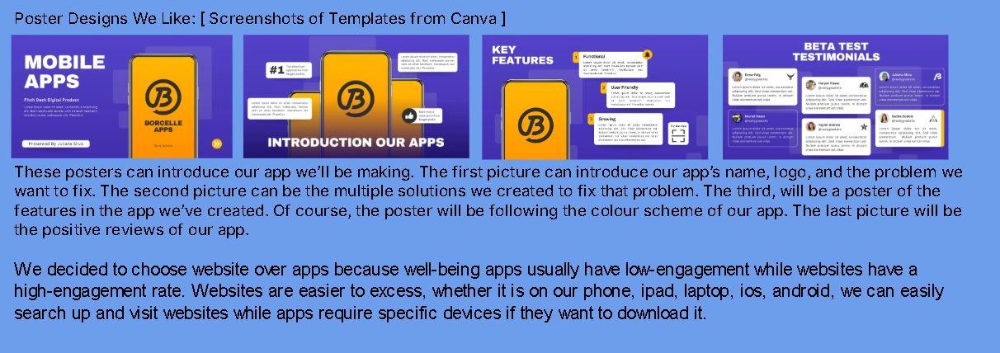

Secondary Research
We reviewed mental health websites and wellbeing studies. Key topics included causes of stress, effects on students, and school-based solutions.


Student-centred wellbeing resources & ideas
A student-led project combining research, design and practical ideas to make schools safer, happier and more supportive.

We explored wellbeing through secondary sources, student surveys, and visual design. Each method helped us understand what students need most.
We reviewed mental health websites and wellbeing studies. Key topics included causes of stress, effects on students, and school-based solutions.
We surveyed students and teachers across years 5–10. Students shared how they cope with stress, what support they need, and what schools are doing well.


Combines secondary research, survey results, and design ideas into one visual overview. Helps explain the full project at a glance.

We created posters and app mockups to promote wellbeing. These designs introduce our app, explain its features, and share testimonials from beta testers.
Shows how students, teachers, and schools interact with the wellbeing app to improve support.

Visual posters introducing app features, solutions, and testimonials from beta testers.

Explains the app’s name, purpose, and how it helps students manage stress and track wellbeing.
Defines wellbeing, shares survey data, and outlines strategies for improvement.

Our research revealed important insights into student wellbeing. These findings shaped our design and recommendations.
Over 70% of students reported feeling stressed weekly, especially during exams and deadlines.
Only 40% of students felt confident accessing support. Most were unsure who to talk to or feared judgment.
Students found talking to someone, taking breaks, and using wellbeing apps helpful. Teachers recommended structured routines and peer support.
Students suggested wellbeing hubs, flexible homework policies, anonymous feedback tools, and more inclusive clubs and events.
Here are practical tools and activities to support wellbeing in schools.
A curated page with guides on mental health, helplines, and recommended apps like Calm, Headspace, and SchoolMate.
Ideas include movie nights, baking clubs, art therapy, and peer-led support groups to build community and reduce isolation.
Infographics and app prototypes designed to promote wellbeing, track progress, and encourage student voice in school decisions.
If you'd like this project customised for your school, reach out below.